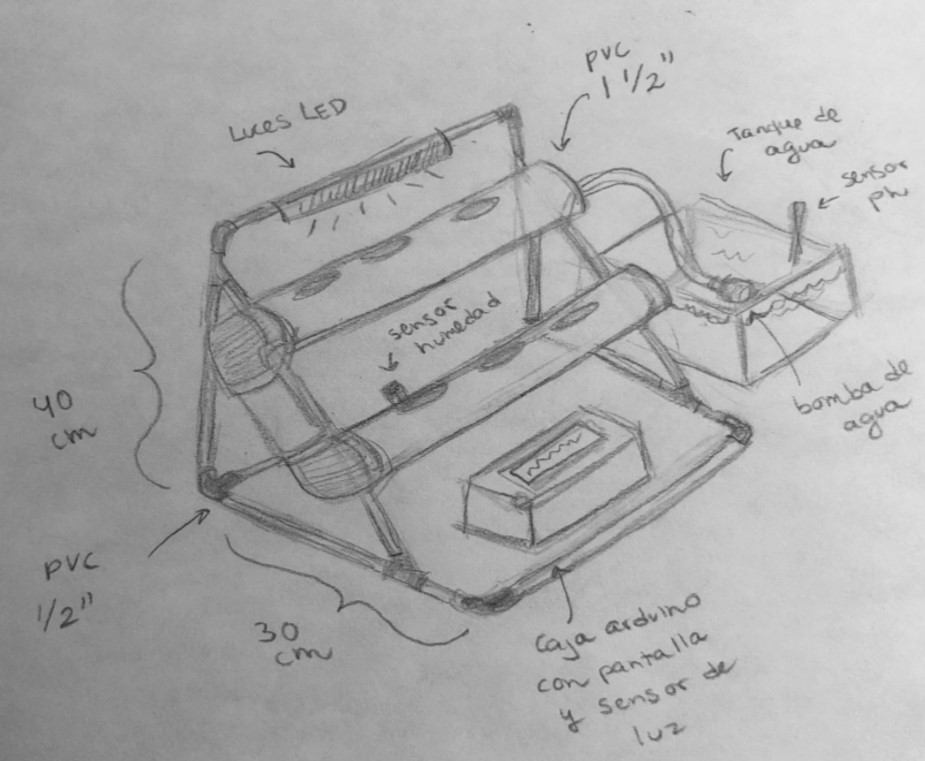

DESARROLLO DE PROTOTIPO FISICO
Proyecto Hidropónico
Este proyecto se centra en la búsqueda de material y técnicas adecuadas para realizar un sistema hidropónico tipo NFT automatizado que sea capaz de producir de manera eficiente hortalizas de diferentes tipos en espacios reducidos que no cuenten con un suelo para cultivar y/o para personas que no cuenten con los medios para tener un suministro de hortalizas a su disposición manteniendo siempre en mente que el sistema hidropónico tenga un costo accesible y competitivo con modelos existentes del mercado. El sistema hidropónico tiene que ser de fácil instalación, operación y mantenimiento para el usuario.
